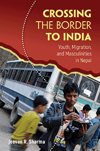

<body bgcolor="#FFFFFF" text="#000000" link="#0000FF" vlink="#CC0000" alink="#CC0000"><center><hr width="350" size="1" align="center" noshade>How the changing political economy of rural Nepal informs the desire and agency of young male migrants who seek work in cities<hr width="350" size="1" align="center" noshade><p><a href="https://cdcshoppingcart.uchicago.edu/Cart/ChicagoBook.aspx?ISBN=&&PRESS=temple" target="_top">Buy this book!</a> | <a href="https://cdcshoppingcart.uchicago.edu/Cart/Cart.aspx?PRESS=temple" target="_top">View Cart</a> | <a href="https://cdcshoppingcart.uchicago.edu/Cart/Cart.aspx?PRESS=temple" target="_top">Check Out</a></p><p></p></center><!--none//--><h1 class = "booktitle">Crossing the Border to India</h1> <h1 class = "subtitle">Youth, Migration, and Masculinities in Nepal </h1>
<h3>Jeevan R. Sharma </h3>
<p class="info">cloth: $69.50, Jul 18<BR>EAN:&nbsp;978-1-4399-1426-7<BR><font color=#990033>Not Yet Published Preorder</FONT><font size=-7><br>&nbsp;</font></p><p class="info">e-book: $69.50, Jul 18<BR>EAN:&nbsp;978-1-4399-1428-1<BR><font color=#990033>Not Yet Published Preorder</FONT><font size=-7><br>&nbsp;</font></p></p></td></tr></table>
<BR> <p class="info">192 pp<BR> 5.25 x 8.5<BR> 3 figs., 1 maps <p class="info"><font size=-7>&nbsp;</font></p><p class="info">
</P><BLOCKQUOTE></BLOCKQUOTE>
<p>Given the limited economic opportunities in rural Nepal, the desire of young men of all income and education levels, castes and ethnicities to migrate has never been higher. <i>Crossing the Border to India</i> provides an ethnography of male labor migration from the western hills of Nepal to Indian cities. Jeevan Sharma shows how a migrant's livelihood and gender, as well as structural violence impacts his perceptions, experiences, and aspirations. Based on long-term fieldwork, Sharma captures the actual experiences of crossing the border. He shows that Nepali migration to India does not just allow young men from poorer backgrounds to "save there and eat here," but also offers a strategy to escape the more regimented social order of the village. Additionally, migrants may benefit from the opportunities offered by the "open-border" between India and Nepal to attain independence and experience a distant world. However, Nepali migrants are subjected to high levels of ill treatment. Thus, while the idea of freedom remains extremely important in Nepali men's migration decisions, their actual experience is often met with unfreedom and suffering.<br>
<P CLASS="top"><A HREF="#top">BACK TO TOP</A></P>&nbsp;
<BR>&nbsp;
&nbsp;<P>
</P><BR>&nbsp;
<H2 class="inpageheading"><A NAME="author bio"></a>About the Author(s)</H2><p><b>Jeevan R. Sharma</b> is Lecturer in South Asia and International Development at the University of Edinburgh.<br>
<P CLASS="top"><A HREF="#top">BACK TO TOP</A></P>
<p><h2 class="inpageheading"><a name="subjects"></a>Subject Categories</h2> <p><a href="http://www.temple.edu/tempress/immigration.html" target="_top">Immigration</a> <br><a href="http://www.temple.edu/tempress/asian.html" target="_top">Asian Studies</a> <br><a href="http://www.temple.edu/tempress/race.html" target="_top">Race and Ethnicity</a> <br><a href="http://www.temple.edu/tempress/anthropology.html" target="_top">Anthropology</a> <br><a href="http://www.temple.edu/tempress/gender.html" target="_top">Gender Studies</a> </p>
</p>
<P>
<h2 class="inpageheading">In the Series</h2>�
<p>�<a target="_top" href="http://www.temple.edu/tempress/gy.html" OnMouseOver="window.status='Click for other books in this series!';return true;"OnMouseOut="window.status=" ><i>Global Youth</i></a></P>
<p><p>
The <em>Global Youth</em> Book Series, edited by Craig Jeffrey and Jane Dyson, comprises research-based studies of young people in the context of global social, political and economic change. The series brings together work that examines youth and aspects of global change within sociology, anthropology, development studies, geography, and educational studies. Our emphasis is on youth in areas of the world that are often excluded from mainstream discussions of young people, such as Latin America, Africa, Asia and Eastern Europe, but we also welcome studies from Western Europe and North America, and books that bridge the global north and global south.
</p></P>
�</P>��
</P>
<p align="center"><a href="https://cdcshoppingcart.uchicago.edu/Cart/ChicagoBook.aspx?ISBN=&&PRESS=temple" target="_top">Buy this book!</a> | <a href="https://cdcshoppingcart.uchicago.edu/Cart/Cart.aspx?PRESS=temple" target="_top">View Cart</a> | <a href="https://cdcshoppingcart.uchicago.edu/Cart/Cart.aspx?PRESS=temple" target="_top">Check Out</a></p><p><font face="Arial" size="1"><a href="copyright.html" onMouseOver="window.status='Web Copyright Policy';return true;" onMouseOut="window.status=''" title="Web Copyright Policy">&copy;</a> 2018 <a href="http://www.temple.edu" target="new" onMouseOver="window.status='Link to Temple University home page';return true;" onMouseOut="window.status=''" title="Link to Temple University home page">Temple University</a>. All Rights Reserved. http://www.temple.edu/tempress/titles/2430_reg.html</font></p>